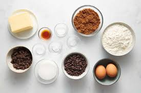

Chocolate Chip Cookies

Description
Chocolate chip cookies are soft and sweet baked treats filled with chocolate chips. They are slightly crispy on the outside, chewy on the inside, and perfect as a snack or dessert.
Chocolate Chips Cookies Ingredients
- 125g all-purpose flour
- 60g butter (softened)
- 50g sugar
- 50g brown sugar
- 1 small egg
- 1/2 teaspoon vanilla extract
- 1/2 teaspoon baking soda
- A pinch of salt
- A pinch of salt

*Image is for illustration purpose only
Tools
- Mixing bowl
- Whisk or spoon
- Baking tray
- Parchment paper (optional)
- Oven
How To Cook (Steps)
- Preheat the oven to 180°C (350°F).
- In a bowl, mix butter, sugar, and brown sugar until smooth.
- Add the egg and vanilla extract, then mix well.
- Add flour, baking soda, and salt. Stir until combined.
- Fold in the chocolate chips.
- Scoop small portions of dough onto a baking tray.
- Bake for 10–12 minutes or until golden brown.
- Let the cookies cool before serving.